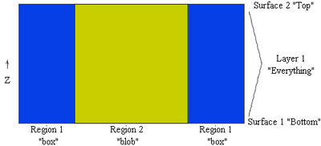

|
Extrusion Notation in FlexPDE |

  
|
|
Extrusion Notation in FlexPDE |
|
Performing the extrusion above requires three basic changes in the 2D script:
| • | The COORDINATES section must specify CARTESIAN3. |
| • | A new EXTRUSION section must be added to specify the layering of the extrusion. |
| • | PLOTS and MONITORS must be modified to specify any cut planes or surfaces on which the display is to be computed. |
There are two forms for the EXTRUSION section, the elaborate form and the shorthand form. In both cases, the layers of the model are built up in order from small to large Z.
In the elaborate form, the dividing SURFACES and the intervening LAYERS are each named explicitly, with algebraic formulas given for each dividing surface.
Note: With this usage, we have overloaded the word SURFACE. As a plot command, it can mean a form of graphic output in which the data are presented as a three-dimensional surface; or, in this new case, it can mean a dividing surface between extrusion layers. The distinction between the two uses should be clear from the context.
In the simple case of our extruded cylinder in a square, it looks like this:
EXTRUSION
SURFACE 'Bottom' z=0
LAYER 'Everything'
SURFACE 'Top' z=1
The bottom and top surfaces are named, and given simple planar shapes.
The layer between these two surfaces comprises everything in the domain, so we can name it 'Everything'.
In the shorthand form, we merely state the Z-formulas:
EXTRUSION z = 0, 1
In this case, the layers and surfaces must later be referred to by number. The first surface, z=0, is identified as surface 1. The second surface, z=1, as surface 2.
Notice that there is no distinction, as far as the layer definition is concerned, between the parts of the layer which are in the cylinder and the parts of the layer which are outside the cylinder. This distinction is made by combining the LAYER concept with the REGION concept of the 2D base plane representation. In a vertical cross-section we can label the parts as follows:

Notice that the cylinder can be uniquely identified as the intersection of the 'blob' region of the base plane with the 'Everything' layer of the extrusion.